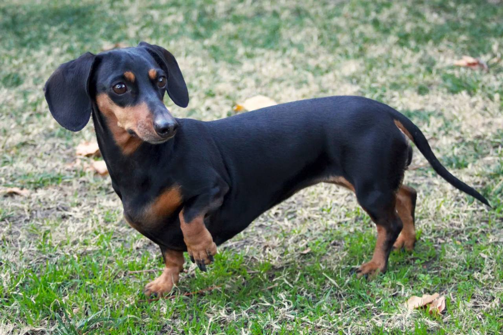

Такса

Происхождение: Германия
Размер: Малые (стандартные: вес до 9 кг, мини: до 5 кг)
Характер: Смелые, любопытные, иногда упрямые
Особенности: Длинное тело – риск проблем с позвоночником. Охотничий инстинкт (могут гоняться за мелкими животными). Бывают гладкошерстные, длинношерстные и жесткошерстные
Здоровье: Межпозвоночные грыжи, ожирение